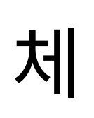
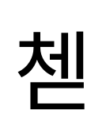
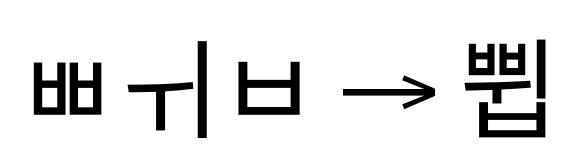
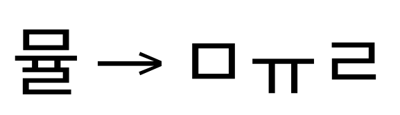
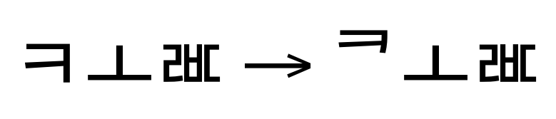
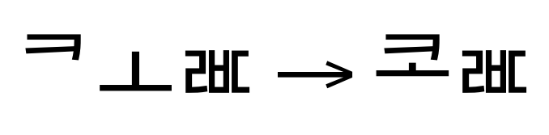
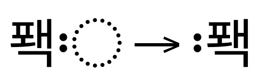

Hangul script shaping in OpenType¶
This document details the general shaping procedure shared by all Hangul script styles, and defines the common pieces that style-specific implementations share.
Table of Contents
The
<hang>shaping model
General information¶
The Hangul script is used to write Korean. It may also be referred to as the Choseongul script or Jeongum script, and is in use in both North Korea and South Korea as well as regions within China. It may also be used to write the Cia-Cia language in Indonesia.
Hangul syllables are formed from individual alphabetic letters that are arranged into square cells using pre-defined patterns. The syllables themselves are monospaced in a run of text, using interword spacing and punctuation.
Korean text may, in practice, incorporate Chinese characters (“Hanja”) in addition to Hangul. Hanja characters are not affected by the shaping model for Hangul.
Modern Korean text is typically written (and, therefore, rendered) left to right. Classical and older texts, however, may be written vertically, top to bottom.
Terminology¶
OpenType shaping uses a standard set of terms for elements of the Hangul script. The terms used colloquially in any particular language or country may vary, however, potentially causing confusion.
Jamo characters are the fundamental letters from which syllable blocks are constructed. There are three classes of jamo:
Leading consonants (choseong)
Vowels (jungseong)
Trailing consonants (jongseong)
Most, but not all, of the basic consonant letters can appear either in leading or in trailing form. Nevertheless, the leading and trailing forms are assigned distinct codepoints in Unicode. In addition, the set of valid trailing consonants includes several compound-consonant pairs that can never occur in leading form.
Old Korean featured a considerable number of additional jamo, which are also defined in Unicode. Many of these Old Korean jamo are compound forms that concatenate two or three basic jamo.
A syllable is formed by arranging a sequence of jamo into its appropriate square-cell form. The horizontal and vertical positioning of each jamo in the cell depends on the content of the syllable. The exact shape and proportions of each jamo will also vary with its final position in the cell.
Valid syllables must be either of the form “L,V” or of the form
“L,V,T”. That is, each syllable must begin with one leading
consonant, must include one vowel in the second position, and may or may
not end with one trailing consonant.


All possible syllables for Modern Korean are defined in the Hangul Syllables block of Unicode. A sequence of individual jamo codepoints that corresponds to a valid Modern Korean syllable can therefore be composed into a syllable codepoint.
Sequences of codepoints that involve Old Korean jamo cannot be composed into syllable codepoints and are handled separately by the shaping engine.
Two tone marks are common in Old Korean, the single-dot bangjeom and the double-dot bangjeom. Both bangjeom marks are rendered to the left of the syllable to which they are applied.
Glyph classification¶
Proper shaping of Hangul text runs involves determining when sequences of jamo can be composed into syllable codepoints that are included in the active font — in which case they should be replaced by the corresponding syllable glyph — and when they cannot.
Those jamo sequences that cannot be composed into a syllable codepoint (or that compose into a syllable codepoint that is missing in the active font) are then rendered by shaping and positioning each individual jamo using GSUB substitution rules.
Jamo type¶
Each Hangul jamo is assigned a JAMO_TYPE property that indicates whether
it is a leading consonant (L), a vowel (V), or a trailing
consonant (T).
Most, but not all, of the basic consonant letters can appear either in leading or in trailing form. Nevertheless, the leading and trailing forms are assigned distinct codepoints in Unicode. In addition, the set of valid trailing consonants includes several compound consonant pairs that can never occur in leading form.
For example, the basic consonant “Kiyeok” (ᄀ) is encoded as U+1100
in its leading (choseong) form but as U+11A8 in its trailing
(jongseong) form. The tense or emphatic form of the consonant,
“Ssangkiyeok” (ᄁ), is encoded in its leading (choseong) form as
U+1101 but in its trailing (jongseong) form as U+11A9, and is
rendered visually as a doubled version of the basic consonant.
In addition, two compound trailing consonants, “Kiyeok-sios” (ᆪ
U+11AA) and “Rieul-kiyeok” (ᆰ U+11B0), also incorporate the
Kiyeok basic consonant. But Kiyeok-sios and Rieul-kiyeok are never
used as leading consonants, therefore they are not encoded in leading
(choseong) forms.
Note: compound consonant jamo are not written as sequences of basic jamo. That is, “Kiyeok,Kiyeok” (ᄀᄀ) is not equivalent to “Ssangkiyeok” (ᄁ).
The Hangul Jamo block also includes two “filler” codepoints. “Choseong
Filler” (U+115F) can take the place of a missing choseong (L
consonant), and “Jungseong Filler” (U+1160) can take the place of a
missing jungseong (V vowel). For shaping purposes, the fillers are
classified as type Lf and type Vf, respectively.
Composing behavior¶
Modern Korean features 19 leading consonants (L forms), 21 vowels
(V forms), and 27 trailing consonants (T forms).
Old Korean featured a considerable number of additional jamo, which are also defined in Unicode. Some of these Old Korean jamo are distinct basic letters that are no longer used in Modern Korean. Many others are compound forms that concatenate two or even three basic jamo.
The Hangul Syllables block in Unicode only includes those syllables
that contain solely Modern jamo. Consequently, each jamo is assigned a
COMPOSING_BEHAVIOR property to indicate whether it can be composed
into a Hangul Syllable codepoint.
An “L,V,T” sequence with the COMPOSING_BEHAVIORs
“YES,YES,YES” or an “L,V” sequence with the
COMPOSING_BEHAVIORs “YES,YES” will compose to a codepoint in the Hangul
Syllables block. A sequence containing any NOs will not compose to a
codepoint in the Hangul Syllables block.
Note: the jamo filler codepoints are both designated with the
COMPOSING_BEHAVIORofNO.
Character tables¶
Separate character tables are provided for the Hangul Jamo, Hangul
Jamo Extended-A, and Hangul Jamo Extended-B blocks, as well as for other miscellaneous
characters that are used in <hang> text runs:
The Hangul Jamo block contains all of the Modern Korean jamo, the two jamo fillers, and the most common Old Korean jamo.
The Hangul Jamo Extended-A block contains additional L (choseong)
jamo for Old Korean. The Hangul Jamo Extended-B block contains
additional V (jungseong) and T (jongseong) jamo for Old Korean.
The Hangul Syllables block contains all of the valid permutations of the
Modern Korean jamo. Each syllable codepoint can be classified by
syllable type, either LV or LVT. These types are synonymous with
the “Hangul Syllable Type” property in Unicode. Due to the size of the
Hangul Syllables block, a full character table is not
provided. However, a
summary
is included to show the ranges of LV and LVT syllables.
Unicode also defines a Hangul Compatibility Jamo block that implements backward compatibility with a retired file-encoding format. Unless a software application is required to support specific stores of documents that are known to have used the older encoding, however, the shaping engine should not be expected to handle any text runs incorporating codepoints from this block.
The tables list each codepoint along with its Unicode general category, its jamo type, and its composing behavior. The codepoint’s Unicode name and an example glyph are also provided.
For example:
Codepoint |
Unicode category |
Jamo type |
Composing |
Glyph |
|---|---|---|---|---|
|
Letter |
L |
YES |
ᄉ Sios |
|
Letter |
V |
NO |
ᆂ O-O |
Codepoints with no assigned meaning are designated as unassigned in the Unicode category column.
In addition to general punctuation, runs of Hangul text may use punctuation marks from the CJK Symbols And Punctuation block.
Of particular note are the single-dot tone mark (single-dot bangjeom)
and double-dot tone mark (double-dot bangjeom), U+302E and
U+302F. These non-spacing marks are common in Old Korean.
Other important characters that may be encountered when shaping runs
of Hangul text include the dotted-circle placeholder (U+25CC), the
zero-width joiner (U+200D), and zero-width non-joiner (U+200C).
The dotted-circle placeholder is frequently used when displaying a mark in isolation. Real-world text may also use other characters, such as hyphens or dashes, in a similar placeholder fashion; shaping engines should cope with this situation gracefully.
The zero-width space (U+200B) or word joiner (U+2060) may be used
between two jamo to prevent them from being conjoined into a
syllable. The zero-width space allows a line break to happen between
the jamo, while the word joiner prevents the jamo from being separated
by a line break.
The <hang> shaping model¶
Processing a run of <hang> text involves six top-level stages:
Identifying syllables
Determining if the syllable can be composed into a Hangul Syllables codepoint
Composing the syllable (if composition is possible)
Fully decomposing the syllable (if composition is not possible)
Shaping the fully decomposed syllable with GSUB features
Reordering tone marks
1. Identifying syllables¶
The precomposed syllable codepoints in the Hangul Syllable block come in
two forms: LV syllables (which represent an L jamo and a V jamo)
and LVT syllables (which represent an L jamo, a V jamo, and a T jamo).
A syllable consisting of a string of jamo must match either the
sequence “L,V” or the sequence “L,V,T”.
The L, V, and T components must be a single jamo each. In Modern
Korean, all of the jamo must have a COMPOSING_BEHAVIOR of YES. In
Old Korean, YES and NO are both acceptable for
COMPOSING_BEHAVIOR.
However, real-world input can also include syllables entered as a
precomposed LV Hangul Syllable codepoint followed by a standalone
T jamo.
Syllables in a text run can therefore be identified with the following regular expression:
Slvt | <Slv | <L|Lf>+<V|Vf>> + [T]
L L jamo
V V jamo
T T jamo
Lf L jamo filler
Vf V jamo filler
Slv Precomposed "LV" syllable
Slvt Precomposed "LVT" syllable
[ ] optional occurence of the enclosed expression
<|> one of the options separated by the vertical bar
The expression matches five possible syllable types:
SlvtSlvSlv,TL,VL,V,T
Sequences of jamo that do not match the above expression should be treated as runs of standalone jamo letters.
After the syllables have been identified, each of the subsequent shaping stages occurs on a per-syllable basis.
2. Determining if the syllable can be composed into a Hangul Syllables codepoint¶
2.1 Fully precomposed syllables¶
A precomposed Slvt or Slv syllable requires no shaping if the active
font includes a glyph for the corresponding Hangul Syllables
codepoint. If the glyph is present, the shaping engine can render it
and proceed directly to stage six without further work. If the glyph
is not present, the shaping engine must proceed to stage four.
The other syllable types involve jamo, and each syllable must be examined to determine if it composes into a codepoint in the Hangul Syllables block.
2.2 Partially precomposed syllables¶
For “Slv,T” syllables, the Slv codepoint must first be
decomposed into its constituent jamo. Then, the resulting
“L,V,T” syllable must be examined in the next
step.
The decomposition of the Slv syllable is canonical, and uses the
algorithm defined in stage four.
2.3 Fully jamo syllables¶
For “L,V” and “L,V,T” syllables, the COMPOSING_BEHAVIOR of
each jamo must be examined.
If all jamo in the syllable have COMPOSING_BEHAVIOR of YES, then
the shaping engine should proceed to stage three and attempt to
compose the jamo into the corresponding Hangul Syllables codepoint.
If any of the jamo in the syllable have COMPOSING_BEHAVIOR of NO,
then the shaping engine should proceed to stage five and shape the
syllable using GSUB features.
3. Composing the syllable (if composition is possible)¶
Unicode defines a canonical algorithm for composing jamo into Hangul
Syllables codepoints. The algorithm leverages the strict jamo-ordering
of the syllables in the block to provide an algebraic method to
determine the codepoint of a syllable using the codepoints of its
constituent L, V, and (if needed) T jamo as input.
The algorithm defines the following consonants:
SBase = AC00
LBase = 1100
VBase = 1161
TBase = 11A7
LCount = 19
VCount = 21
TCount = 28
NCount = (VCount * TCount) = 588
SCount = (LCount * NCount) = 11172
For a jamo sequence “L,V”, where both L and V are of
COMPOSING_BEHAVIOR YES, the composed syllable codepoint is found
by computing:
LIndex = L - LBase
VIndex = V - VBase
LVIndex = LIndex * NCount + VIndex * TCount
Slv = SBase + LVIndex
Similarly, for a jamo sequence “L,V,T”, where L, V, and T
are all of COMPOSING_BEHAVIOR YES, the composed syllable codepoint
is found by computing:
LIndex = L - LBase
VIndex = V - VBase
TIndex = T - TBase
LVIndex = LIndex * NCount + VIndex * TCount
Slvt = SBase + LVIndex + TIndex
After the syllable codepoint has been found, the shaping engine must verify that the codepoint’s glyph exists in the active font. If the glyph is present, the shaping engine must substitute the input jamo sequence with the glyph. The shaping engine can then proceed to stage six.
If the needed codepoint is missing, the shaping engine should perform
no substitution and must proceed to stage five with the original L,
V, and (if used) T jamo.

4. Fully decomposing the syllable (if composition is not possible)¶
An “Slv,T” syllable that does not compose into a Hangul Syllables
codepoint or that composes into a Hangul Syllables codepoint which is
missing in the active font must be fully decomposed into jamo.
Similarly, a precomposed Slvt or Slv syllable requires no shaping
if the active font includes a glyph for the corresponding Hangul
Syllables codepoint. If the corresponding codepoint is missing in the
active font, however, the syllable must be fully decomposed into jamo.
Unicode defines a canonical algorithm for decomposing Hangul Syllables
codepoints into constituent jamo. The algorithm leverages the strict
jamo-ordering of the syllables in the block to provide an algebraic method to
determine the codepoints of a syllable’s L, V, and (if needed) T
jamo from the syllable’s codepoint.
The algorithm defines the following consonants:
SBase = AC00
LBase = 1100
VBase = 1161
TBase = 11A7
LCount = 19
VCount = 21
TCount = 28
NCount = (VCount * TCount) = 588
SCount = (LCount * NCount) = 11172
For a syllable codepoint S, the codepoints of the constituent L,
V, and T jamo are found by computing:
SIndex = S - SBase
LIndex = SIndex div NCount
VIndex = (SIndex mod NCount) div TCount
TIndex = SIndex mod TCount
L = LBase + LIndex
V = VBase + VIndex
T = TBase + TIndex if TIndex > 0
If TIndex = 0, then the syllable has no T jamo in the
trailing-consonant (jongseong) position.
With the syllable decomposed, the shaping engine can proceed to stage
five with the L, V, and (if used) T jamo.

5. Shaping the fully decomposed syllable with GSUB features¶
With the syllable fully decomposed into a sequence of jamo, the next stage applies mandatory substitution features using rules in the font’s GSUB table.
5.1 ccmp¶
The ccmp feature allows a font to substitute basic-jamo sequences
with a pre-composed glyph including compound jamo.
If present, these composition and decomposition substitutions must be
performed before applying any other GSUB lookups, because
those lookups may be written to match only the ccmp-substituted
glyphs.
5.2 ljmo¶
This feature replaces the default (i.e., standalone) forms of leading consonant (choseong) glyphs in a syllable cell with alternate forms that fit into syllable-appropriate positions.
The appropriate shape of the choseong glyph depends on the shape of the vowel (jungseong) that follows. For example, a tall jungseong forces the usage of a tall choseong form.
In addition, if the syllable ends in a trailing consonant (jongseong), then shorter forms of both the leading consonant (choseong) and vowel (jungseong) glyphs will be used in order to provide sufficient vertical space.

5.3 vjmo¶
This feature replaces the default (i.e., standalone) forms of vowel (jungseong) glyphs in a syllable cell with alternate forms that fit into syllable-appropriate positions.
The appropriate shape of the jungseong glyph depends on the presence or absence of a trailing consonant (jongseong) at the end of the syllable.
If the syllable ends in a trailing consonant (jongseong), then shorter forms of both the leading consonant (choseong) and vowel (jungseong) glyphs will be used in order to provide sufficient vertical space.

5.4 tjmo¶
This feature replaces the default (i.e., standalone) forms of trailing consonant (jongseong) glyphs in a syllable cell with alternate forms that fit into syllable-appropriate positions.
Because jongseong jamo are always preceded by a choseong jamo and a jungseong jamo, there is less variation in shape that the alternate forms can take on. A given font may, however, include several context-dependent alternates for stylistic or typographic variation.

6. Reordering tone marks¶
Any tone marks should now be reordered. In the text run, marks occur immediately after the syllable to which they apply. After reordering, each mark should be placed immediately to the left of the syllable.
This reordering move is the same regardless of whether the syllable in question is a precomposed syllable codepoint from the Hangul Syllables block or a jamo-based syllable composed via the application of GSUB features. Therefore, the reordering must take place at the end of the shaping process.
